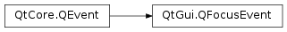

QFocusEvent¶
Detailed Description¶
The
PySide2.QtGui.QFocusEventclass contains event parameters for widget focus events.Focus events are sent to widgets when the keyboard input focus changes. Focus events occur due to mouse actions, key presses (such as Tab or Backtab), the window system, popup menus, keyboard shortcuts, or other application-specific reasons. The reason for a particular focus event is returned by
PySide2.QtGui.QFocusEvent.reason()in the appropriate event handler.The event handlers
QWidget.focusInEvent(),QWidget.focusOutEvent(),QGraphicsItem.focusInEventandQGraphicsItem.focusOutEvent()receive focus events.See also
QWidget.setFocus()QWidget.setFocusPolicy()Keyboard Focus in Widgets
-
class
PySide2.QtGui.QFocusEvent(type[, reason=Qt.OtherFocusReason])¶ Parameters: - type –
PySide2.QtCore.QEvent.Type - reason –
PySide2.QtCore.Qt.FocusReason
Constructs a focus event object.
The
typeparameter must be eitherQEvent.FocusInorQEvent.FocusOut. Thereasondescribes the cause of the change in focus.- type –
-
PySide2.QtGui.QFocusEvent.gotFocus()¶ Return type: PySide2.QtCore.boolReturns
trueifPySide2.QtCore.QEvent.type()isQEvent.FocusIn; otherwise returns false.
-
PySide2.QtGui.QFocusEvent.lostFocus()¶ Return type: PySide2.QtCore.boolReturns
trueifPySide2.QtCore.QEvent.type()isQEvent.FocusOut; otherwise returns false.
-
PySide2.QtGui.QFocusEvent.reason()¶ Return type: PySide2.QtCore.Qt.FocusReasonReturns the reason for this focus event.
© 2018 The Qt Company Ltd. Documentation contributions included herein are the copyrights of their respective owners. The documentation provided herein is licensed under the terms of the GNU Free Documentation License version 1.3 as published by the Free Software Foundation. Qt and respective logos are trademarks of The Qt Company Ltd. in Finland and/or other countries worldwide. All other trademarks are property of their respective owners.